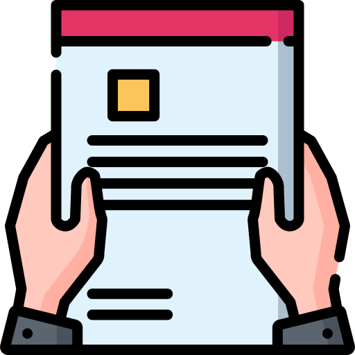

C a m p a ñ a
Electoral
¿Qué es campaña electoral?
Las candidaturas deben contar con un periodo de tiempo para poder hacer su campaña, es decir, exponer a los votantes qué motivaciones, propuestas y propósitos tienen como candidatos.
Tiempo
Es necesario definir fecha de inicio y cierre de campaña, Todos los candidatos y candidatas deben tener el mismo tiempo para desarrollar la campaña.

Propuestas
Es importante que los candidatos cuenten con un “programa de gobierno” o las propuestas, que son su equivalente y deben responder a las funciones del cargo para el que van a ser elegidos.

Objetivo
Durante la campaña los candidatos buscan hacer llegar su mensaje y motivar a los electores para que voten por ellos.